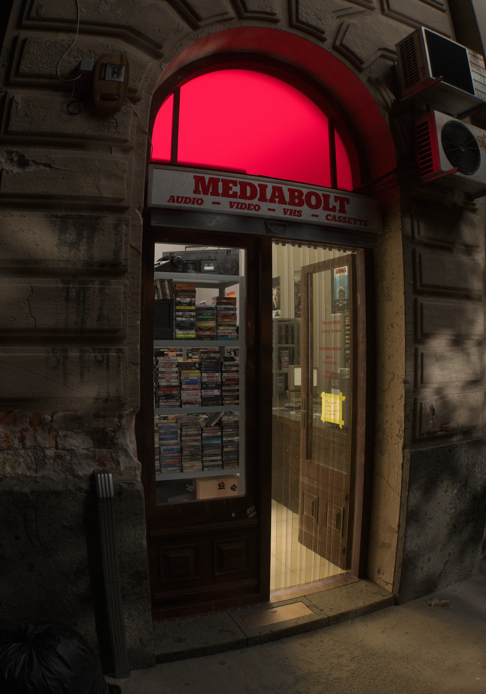

Night Store
A scene inspired by a late-night walk during my trip to Budapest.
I remember walking through the city on a warm night and noticing a small shop that was still open, glowing into the empty street. It was actually just a regular convenience store, but I reimagined it as a music shop because visually it felt more interesting and gave me more room to play with the atmosphere.
I focused heavily on surface detail - especially the wall. Old marks from removed objects, dirt leaks from water damage, broken plaster where something used to be mounted - that was one of the hardest parts to get right.
This piece was rendered in Octane, and it really helped me push the look closer to what I originally imagined. I also had a lot of fun working on the AC units - surprisingly one of my favorite parts to texture.
Everything was created in Blender and Photoshop.
